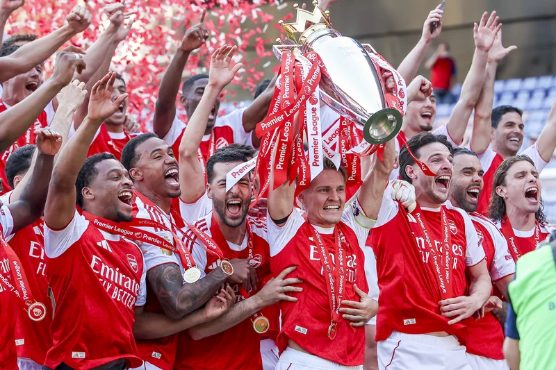

About Us

Action Plus Sports Images is a UK-based sports photography agency with nearly 50 years of history covering the games, races, and tournaments that define the sporting calendar. Our network of around 60 staff and contributing photographers shoots more than 300 types of sporting events across the UK, Europe, and at major fixtures worldwide.
Our photographers work to the highest standards of professionalism, and for nearly half a century Action Plus has been a critical source of imagery for the agencies, broadcasters, publishers, and newspapers who shape how sport is seen. Our images are regularly selected for front and back pages, magazine covers, and book jackets, and our clients include the BBC, Sky News, Sports Illustrated, The Times, The Telegraph, The Guardian, and Reach, alongside hundreds of regional titles and specialist publications.
We cover:
- Premier League, EFL Championship, Scottish Premiership and La Liga football
- Champions League, Europa League, FA Cup, EFL Cup, and international fixtures
- Six Nations and Premiership Rugby
- Wimbledon and the ATP and WTA tours
- The Open and major golf championships
- Formula One, MotoGP and other motorsports
- The Grand National, Royal Ascot, and the flat and jump racing calendar
- Test cricket, The Hundred, and county cricket
- Athletics, cycling, and Olympic and Paralympic sports
- Boxing, MMA, and combat sports
Headquartered in the UK with a US base in California, we deliver same-day editorial service across time zones, alongside commissioned assignment work and archival licensing.